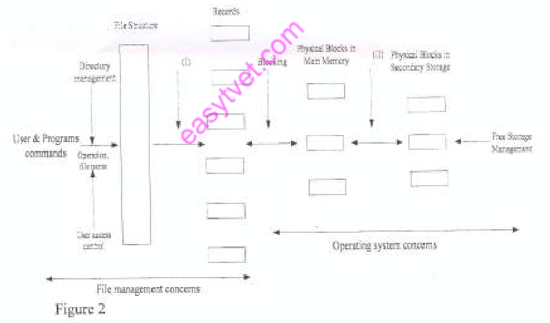

OPERATING SYSTEMS
Exam Code: 2920/105
Duration: 3 hours
Period: July 2013
Explain cach of the following terms as used in memory management: (i) caching: Caching in memory management is a technique used to improve system performance by storing frequently accessed data in a smaller, faster memory called a cache. When the CPU needs to access data, it first checks the cache. If the data is present (a cache hit), it is accessed from the cache, which is much faster than accessing main memory. If the data is not in the cache (a cache miss), it is retrieved from main memory and also copied into the cache for future accesses. Caching leverages the principle of locality to reduce average memory access time. Explain cach of the following terms as used in memory management: (ii) trashing. Thrashing in memory management is a state where the system spends most of its time swapping pages between main memory and secondary storage (disk), with very little productive work being done. This occurs when the degree of multiprogramming is too high, and processes do not have enough physical memory to hold their working sets. As a result, excessive page faults occur, leading to high disk I/O activity and a significant decrease in system performance and CPU utilization. The system becomes inefficient as it is constantly busy swapping pages rather than executing processes. Two processes A and B are to be executed in a uni-processor computer. When one of the processes is being executed the other cannot proceed because of common set of data. (i) Describe the section of memory depicted in the scenario. The section of memory depicted in the scenario is the critical section. This is a segment of code that accesses shared resources, in this case, a "common set of data". When one process (A or B) is executing within its critical section, accessing and potentially modifying the shared data, the other process is prevented from entering its own critical section that operates on the same data. This mutual exclusion ensures that data consistency is maintained and race conditions are avoided. Only one process can be active in the critical section at any given time. Two processes A and B are to be executed in a uni-processor computer. When one of the processes is being executed the other cannot proceed because of common set of data. (ii) A student observed that each time the processes were executed, different results were produced. Describe the condition that could lead to this observation. The condition that could lead to different results each time the processes are executed is a race condition. This occurs when the outcome of the execution depends on the specific order in which the instructions from processes A and B are interleaved when accessing and manipulating the shared data in the critical section. If the processes are not properly synchronized, the final value of the shared data can vary depending on which process completes its operations first or which process's instructions are executed at a particular moment. This unpredictability in execution order results in inconsistent and variable outputs across different runs. With the aid of a diagram, describe the two-level directory logical structure. The two-level directory structure is a file system organization method that introduces a hierarchy to manage files, overcoming limitations of a single-level directory. It consists of a root directory and user directories. Diagram of Two-Level Directory Structure: Description: At the top is the root directory, which is the main directory. Underneath the root directory, each user has their own user directory. Each user directory acts as a private directory for that specific user, containing all of their files. Users can create, delete, and manage their files within their own user directories. File names only need to be unique within each user directory, resolving naming conflicts that occur in single-level directories. To access a file, a two-part path name is used, specifying the user directory and the file name (e.g., /UserDir/FileName). This structure provides better organization and isolation compared to a single flat directory. (i) Outline two functions of the clock software as used in operating systems. Timekeeping: The clock software is responsible for maintaining the current time and date of the system. It updates the system clock at regular intervals based on hardware timer interrupts. This function is crucial for providing timestamps for files, scheduling events, and tracking system uptime. Process Scheduling: The clock software is used for time-slicing in preemptive scheduling algorithms like Round Robin. It generates timer interrupts that signal the operating system to switch between processes, ensuring fair CPU allocation and enabling multitasking. The timer interrupts trigger the scheduler to regain control and allocate the CPU to another process, preventing any single process from monopolizing the CPU. (ii) Differentiate between dumb and intelligent terminal as used in computer hardware. Dumb Terminal: A dumb terminal is a basic type of terminal that primarily functions as an input/output device. It has very limited processing capabilities and relies entirely on a host computer for processing. Dumb terminals can send user input (keyboard strokes) to the host and display output (text and simple graphics) received from the host. They lack local processing power, memory, and storage. Examples include older text-based terminals used with mainframe computers. Key features: Low cost, simple functionality, no local processing, relies on host for all operations. Intelligent Terminal: An intelligent terminal, also known as a smart terminal, has its own processing capabilities, memory, and can perform some processing tasks independently of the host computer. Unlike dumb terminals, intelligent terminals can execute some applications locally, perform data validation, or format data before sending it to the host. They can also store data and run simple programs. Modern personal computers can act as intelligent terminals when connected to a server. Key features: Higher cost, local processing power, memory, can run applications independently, reduces load on host, more functionality compared to dumb terminals. Key Difference: The main difference is in their processing capability. Dumb terminals are essentially just display and input devices with no local processing, while intelligent terminals have their own processing power and can perform tasks independently, reducing the workload on the central host computer. Explain each of the following terms as used in operating systems: (i) time sharing; Time sharing is an operating system technique that allows multiple users to simultaneously share a computer system. It achieves this by rapidly switching the CPU between different processes, giving each user a small time slice of CPU time. This creates the illusion that each user has exclusive use of the computer, even though they are all using the same system concurrently. Explain each of the following terms as used in operating systems: (ii) system call; A system call is a request from a user-level process to the operating system kernel to perform a privileged operation. It is the interface through which processes can request services from the kernel, such as I/O operations, process management, and memory allocation. System calls are essential for user programs to interact with the operating system and access system resources in a controlled and secure manner. Explain each of the following terms as used in operating systems: (iii) thread. A thread is a lightweight unit of execution within a process. It is a single sequential flow of control within a program. Multiple threads can exist within the same process and share the process's resources such as memory space, code, and data segments. Threads enable concurrency within a process, allowing for parallel execution of different parts of a program and improving responsiveness and efficiency. A hard disk with 255 tracks received requests from the disk controller for data in tracks 40, 67, 11, 240 and 87 in that order respectively. Assuming the head is currently located at track 45. (i) Sketch the order in which C-SCAN scheduling algorithm will service the requests. The C-SCAN (Circular SCAN) algorithm services requests by moving the disk head in one direction (e.g., from lower to higher track numbers), servicing requests along the path. When it reaches the highest track, it quickly returns to the lowest track without servicing any requests and starts scanning again in the same direction. Initial Head Position: 45 Requests: 40, 67, 11, 240, 87 Tracks in order (ascending): 11, 40, 67, 87, 240 C-SCAN Service Order Sketch: A hard disk with 255 tracks received requests from the disk controller for data in tracks 40, 67, 11, 240 and 87 in that order respectively. Assuming the head is currently located at track 45. (ii) Determine the total seek distance in (i). Based on the C-SCAN service order determined in (i): 67 -> 87 -> 240 -> (Return to 0) -> 11 -> 40 Seek Distances Calculation: 1. From 45 to 67: |67 - 45| = 22 tracks 2. From 67 to 87: |87 - 67| = 20 tracks 3. From 87 to 240: |240 - 87| = 153 tracks 4. From 240 to 0 (Return to track 0): |0 - 240| = 240 tracks 5. From 0 to 11: |11 - 0| = 11 tracks 6. From 11 to 40: |40 - 11| = 29 tracks Total Seek Distance: 22 + 20 + 153 + 240 + 11 + 29 = 475 tracks Two processes Pl and P2 are running in a CPU as outlined: - P1 requests for a resource R1 and P2 requests for a resource R2. Both the resources are available and they are allocated to the requesting process. - Later process P1 requests for R2 held by P2 and P2 requests for R1 held by P1. (i) Draw a resource allocation graph to represent this scenario. Resource Allocation Graph: Two processes Pl and P2 are running in a CPU as outlined: - P1 requests for a resource R1 and P2 requests for a resource R2. Both the resources are available and they are allocated to the requesting process. - Later process P1 requests for R2 held by P2 and P2 requests for R1 held by P1. (ii) State the condition depicted by the graph in (1). The condition depicted by the graph in (i) is deadlock. The graph shows a circular wait condition: P1 is waiting for R2 which is held by P2, and P2 is waiting for R1 which is held by P1. This creates a cycle of dependencies where neither process can proceed, resulting in a deadlock situation. A student created a file in her new computer to store project work. (i) Outline four file attributes that could be incorporated in the file. Name: A name for the file to identify and access it, e.g., "ProjectReport.docx". Size: The size of the file, indicating the amount of storage space it occupies, e.g., 50KB. Type: The type or extension of the file, indicating the file format, e.g., ".docx" for a Word document. Permissions: Access permissions to control who can read, write, or execute the file, e.g., read/write for owner, read-only for others. A student created a file in her new computer to store project work. (ii) State two mechanisms that she could use to protect the file against unauthorized access. Access Control Lists (ACLs) or File Permissions: Set appropriate file permissions to restrict access to the file. The student can configure permissions so that only her user account has read and write access, while other users have no access or read-only access. This prevents unauthorized users from modifying or deleting the file. Password Protection or Encryption: Password protect the file using software features (e.g., password protection in document editing software) or encrypt the file using encryption tools. Password protection requires a password to open the file, while encryption scrambles the file content, making it unreadable without the decryption key. Both mechanisms add a layer of security to prevent unauthorized access, even if someone gains physical access to the computer. A student shares the computer with two of her colleagues. Explain a tool that could be used to monitor the computer usage. A tool that could be used to monitor computer usage is an activity monitor or system monitor. Operating systems typically include built-in tools like Task Manager (Windows) or Activity Monitor (macOS). These utilities display real-time information about system resource usage, including CPU usage, memory usage, disk I/O, and network activity, broken down by process. By checking these monitors, the student can track which applications are running, how much resources each user or process is consuming, and identify potential performance bottlenecks or unusual activity. Outline four technical factors that should be considered when choosing I/O devices. Data Transfer Rate/Speed: The speed at which the I/O device can transfer data is a critical factor. Different devices offer varying data transfer rates (e.g., Mbps, Gbps for network cards, MB/s, GB/s for storage devices). The required data transfer rate depends on the application's needs. For example, high-performance applications like video editing or databases require fast storage devices, while basic text editing needs less demanding I/O. Latency: Latency refers to the delay between initiating an I/O request and the start of the actual data transfer. Lower latency is crucial for interactive applications and real-time systems where quick response is essential. Devices like SSDs have significantly lower latency compared to HDDs, making them suitable for applications requiring rapid access. For devices like network interfaces, latency affects network responsiveness. Throughput: Throughput measures the amount of data an I/O device can transfer per unit of time. Higher throughput is desirable for applications that involve bulk data transfer, such as file copying, backups, or video streaming. Device throughput is limited by factors like interface bandwidth, device speed, and controller efficiency. For storage devices, throughput affects file read/write speeds; for network devices, it dictates network bandwidth. Interface and Compatibility: The interface type (e.g., USB, SATA, PCIe, Ethernet) and compatibility of the I/O device with the computer system are crucial. The interface must be supported by the motherboard and system bus. Compatibility ensures that the device can physically connect, communicate, and function correctly with the system. Interface standards dictate data transfer protocols, connectors, and power requirements. Choosing a device with a compatible and appropriate interface is essential for proper operation. Explain the effect of buffering on the performance of each of the following devices: (i) mouse; For a mouse, buffering has a minimal direct effect on performance noticeable to the user. Mouse input events (movements, clicks) are typically generated at a relatively slow rate compared to the CPU and memory speeds. Buffering might be used at a low level to collect mouse events before they are processed, but the buffering does not significantly impact the perceived responsiveness or performance of the mouse from a user perspective. The primary focus for mouse performance is low latency and accurate tracking, not buffering. Explain the effect of buffering on the performance of each of the following devices: (ii) graphic card. For a graphic card, buffering plays a significant role in performance. Graphic cards use frame buffers to store rendered frames before displaying them on the screen. Double buffering or triple buffering techniques, which involve using multiple frame buffers, are employed to prevent screen tearing and improve visual smoothness. Buffering allows the graphics card to prepare the next frame while the current frame is being displayed, leading to smoother animations and video playback. Buffering helps to decouple the rendering rate from the display refresh rate, resulting in a more consistent and visually appealing output. It enhances the perceived performance by reducing visual artifacts and improving frame delivery. Explain each of the following following file organization techniques. (i) sequential; Sequential file organization stores records in a linear sequence, one after another, in the order they were entered. Records are accessed in the same sequential order, starting from the beginning of the file. To access a specific record, one must read through all preceding records. This method is simple to implement and efficient for applications that process data in a fixed order, such as batch processing or reading log files. However, it is inefficient for random access, as it requires sequential searching to find a specific record. Explain each of the following following file organization techniques. (ii) random. Random file organization, also known as direct file organization, allows records to be accessed in any order, directly, without needing to read through preceding records. This is achieved by using a key or record number to directly calculate the physical location of a record on disk. Techniques like hashing or indexing are used to map keys to disk addresses. Random file organization is efficient for applications that require frequent random access to records, such as databases, indexed file systems, and interactive applications. It provides fast access to specific records but is more complex to implement than sequential organization. Distinguish between layered and client/server Operating System structures. Layered Operating System Structure: A layered operating system structure organizes the OS into a hierarchy of layers, where each layer provides services to the layer above it and uses services from the layer below it. Layer 0 is the hardware, and the highest layer is the user interface. Each layer is relatively independent and performs a well-defined set of functions. Communication between layers occurs through defined interfaces. Advantages include modularity, simplified design and debugging, and ease of maintenance. Disadvantages can include performance overhead due to layer interactions and difficulty in strictly defining layer boundaries. Example: Traditional Unix-like systems, though modern OSes often blend layered and modular approaches. Client-Server Operating System Structure: A client-server operating system structure distinguishes between servers, which provide services, and clients, which request and use those services. The kernel is often reduced to a microkernel, providing only essential core functionalities like process management and IPC. Most OS services (file system, networking, device drivers) are implemented as user-level servers running on top of the microkernel. Clients and servers communicate via message passing. Advantages include modularity, extensibility, fault isolation (server failure less likely to crash the kernel), and adaptability to distributed systems. Disadvantages can include performance overhead due to message passing between clients and servers and complexity in designing microkernel and server interactions. Example: Mach, MINIX 3, and modern macOS and Windows kernels (hybrid microkernels). Key Distinction: Layered structure is based on hierarchical levels of abstraction and service provision within a monolithic kernel, while client-server structure separates services into independent user-level servers communicating with clients through a minimal microkernel. Layered is more monolithic, client-server is more modular and distributed. Most multiprogrammed systems are designed such that user programs access memory through virtual addresses and the operating system through physical addresses. Explain two implications of this design on the initiation of I/O operations by the user program. Need for Address Translation for I/O Buffers: When a user program initiates an I/O operation (e.g., reading from a file), it typically specifies virtual addresses for I/O buffers where data will be read into or written from. Since I/O devices and the kernel operate with physical addresses, the operating system must perform address translation to convert these virtual buffer addresses to corresponding physical addresses. This translation is necessary for the kernel to correctly access the user program's buffers in physical memory and transfer data between the I/O device and the program's memory space. Address translation adds an extra step in the I/O path but is essential for memory protection and virtual memory management. Kernel Involvement in I/O Operations: The separation of virtual and physical addresses reinforces the operating system's role as an intermediary for I/O operations. User programs cannot directly access physical memory or I/O devices using virtual addresses. Instead, they must make system calls to request I/O operations. The kernel, running in privileged mode and using physical addresses, handles the actual interaction with I/O devices on behalf of the user program. This design ensures system security and resource management, as the kernel controls and validates all I/O requests, preventing unauthorized or direct hardware access by user-level programs. It enforces protection and abstraction in I/O operations. Outline four file operations used in file management. Create: The create operation is used to make a new file. It involves allocating storage space, creating a directory entry with the file's name, and setting initial file attributes. Read: The read operation retrieves data from a file. It involves accessing the file's content from storage and transferring it to memory. Write: The write operation stores data into a file. It involves transferring data from memory to the file's storage space, potentially creating or modifying the file's content. Delete: The delete operation removes a file. It involves freeing up the storage space occupied by the file and removing its directory entry, making the file no longer accessible. Explain each of the following terms as used in memory management (i) swapping: Swapping is a memory management technique used to increase the degree of multiprogramming by moving processes between main memory (RAM) and secondary storage (disk). When memory becomes full, the operating system swaps out a process that is not currently active from RAM to disk (swap space). Later, when that process needs to be executed again, it is swapped in back into RAM from the disk. Swapping allows more processes to be ready to run than can fit in RAM at once, but it introduces overhead due to disk I/O operations. Explain each of the following terms as used in memory management (ii) overlaying; Overlaying is a memory management technique used in older systems to run programs larger than the available physical memory. It involves dividing a program into overlays, where only the overlay currently needed is loaded into memory. When a different overlay is required, the current one is replaced (overlaid) with the new one. Overlaying is programmer-managed, requiring careful program design to fit within limited memory. It is less common in modern systems with virtual memory. Explain each of the following terms as used in memory management (iii) paging. Paging is a memory management technique that divides both physical memory (RAM) and logical memory (process address space) into fixed-size blocks called pages and frames, respectively. Processes are divided into pages, and these pages are loaded into available frames in RAM. Pages of a process can be non-contiguous in RAM. A page table maps virtual page numbers to physical frame numbers. Paging allows for efficient memory utilization and eliminates external fragmentation, enabling virtual memory implementation. With the aid of a diagram, describe the structure of I/O software. The structure of I/O software in an operating system is typically layered to provide abstraction, modularity, and device independence. It can be visualized in terms of layers, from user applications down to the hardware devices. Diagram of I/O Software Structure: Description of Layers: Layer 4: User-Level I/O: This is the highest layer, consisting of user applications that perform I/O operations through standard library functions (e.g., `stdio` in C). These functions provide a high-level, device-independent interface to applications. Layer 3: Device-Independent OS I/O: This layer provides a device-independent interface to the layers above and manages common I/O functionalities. It includes the system call interface that user programs use to request I/O operations. It also handles buffering, caching, spooling, device naming, and protection, providing a uniform view of I/O to user programs regardless of the specific hardware. Layer 2: Device Drivers: Device drivers are device-specific software modules that control and manage particular types of I/O devices. Each type of device (e.g., disk, printer, network card) has its own driver. Drivers translate device-independent requests from the OS I/O subsystem into device-specific commands that the hardware controller understands. They handle hardware-level operations, interrupt handling, and data transfer for their respective devices. Layer 1: Hardware Controllers: I/O controllers are hardware components that interface between the CPU and the actual I/O devices. Examples are disk controllers, network interface cards, and USB controllers. They execute commands from device drivers, manage data transfer between devices and memory, and handle low-level device control. Layer 0: I/O Hardware: This is the physical I/O device itself, such as a hard disk, printer, keyboard, network card, etc. It performs the actual input or output operations. This layered structure allows for modularity, portability, and device independence. Changes in hardware or device drivers can be made without affecting user applications or higher layers of the OS I/O system. Two processses enter the ready queue of a system with the following properties: Process 1 needs 8 units of CPU time but after every 2 units, it must perform an I/O. Assume that there is no work to be done following the last I/O operation. Process 2 needs 20 units of CPU time and it process arrives just after Process1. Using Round Robin scheduling algorithm with a time slice of 4 units; (i) Draw a Gantt chart showing the execution of the two processes. Process Properties: Process 1 (P1): 8 CPU units, I/O after every 2 units. Process 2 (P2): 20 CPU units, arrives after P1. Time Slice: 4 units. Gantt Chart: Two processses enter the ready queue of a system with the following properties: Process 1 needs 8 units of CPU time but after every 2 units, it must perform an I/O. Assume that there is no work to be done following the last I/O operation. Process 2 needs 20 units of CPU time and it process arrives just after Process1. Using Round Robin scheduling algorithm with a time slice of 4 units; (ii) Determine the completion time for each process. Based on the Gantt chart: Completion Time for Process 1 (P1): 11 units Completion Time for Process 2 (P2): 31 units Describe each of the following memory allocation techniques: (i) dynamic partitioning; Dynamic partitioning is a memory allocation technique where memory partitions are created dynamically at runtime, based on the actual memory requirements of processes. When a process arrives, the operating system allocates a partition of exactly the size needed by the process from the available free memory. Partitions are not fixed in size and are created and sized as needed. This reduces internal fragmentation, but can lead to external fragmentation as memory becomes fragmented into smaller, non-contiguous blocks over time. Describe each of the following memory allocation techniques: (ii) segmentation. Segmentation is a memory management technique that divides a process's logical address space into variable-sized segments. Each segment corresponds to a logical unit of the program, such as code, data, or stack. Segments are allocated in physical memory as contiguous blocks, but segments of a process may not be contiguous with each other. A segment table is used to map segments to their physical memory locations. Segmentation supports logical program structure, facilitates sharing and protection at the segment level, but can suffer from external fragmentation due to variable segment sizes. Joseph would like to replace his computer card reader with a newer version. (i) Identify a principle in I/O device management that could enable him carry out this task without the programs using it. The principle in I/O device management that could enable Joseph to replace his card reader without affecting programs is device independence. Joseph would like to replace his computer card reader with a newer version. (ii) Explain the implementation of the principle identified in (i). Implementation of device independence involves using device drivers and abstract I/O interfaces provided by the operating system. When Joseph replaces the card reader, he only needs to install a new device driver for the newer card reader. The operating system's I/O subsystem is designed to interact with devices through these drivers, using a standard interface. As long as the new driver correctly implements this interface, user programs, which interact with the OS through device-independent system calls, will continue to work without needing any modifications. The OS handles the device-specific details through the driver, abstracting away the hardware differences from applications. Explain the effect of each of the following on CPU utilization: (i) increase main memory capacity; Increasing main memory capacity generally leads to increased CPU utilization. With more RAM, the operating system can load and keep more processes in memory simultaneously (higher degree of multiprogramming). This reduces the frequency of swapping and paging, as more processes can reside in RAM, reducing disk I/O for virtual memory management. With less time spent on swapping and paging, the CPU spends more time executing process instructions, thus increasing overall CPU utilization and system throughput. Explain the effect of each of the following on CPU utilization: (ii) spooling. Spooling (Simultaneous Peripheral Operations On-Line) typically leads to increased CPU utilization, especially for I/O-bound operations like printing. Spooling involves buffering output data to a secondary storage device (e.g., disk) instead of directly sending it to a slow output device (e.g., printer). This allows processes to complete their output operations quickly and continue execution without waiting for the slow I/O device. The actual output to the slow device is handled asynchronously in the background by a spooler process, which is typically less CPU-intensive. By offloading and deferring the slow I/O operations, spooling frees up the CPU to perform other computations, thereby increasing overall CPU utilization and system throughput. Recently, John has realized that his personal computer keeps displaying the message 'your system is getting low on virtual memory'. Describe two ways that he could use to rectify the problem. Increase RAM (Physical Memory): The most effective way to rectify low virtual memory issues is to increase the amount of physical RAM installed in the computer. More RAM reduces the reliance on virtual memory by allowing more data and programs to reside in fast RAM, decreasing the need for paging to disk. This directly addresses the root cause of virtual memory exhaustion by providing more actual memory for the system to use. Upgrading RAM is often the best long-term solution for improving performance and resolving low virtual memory warnings. Increase Paging File Size or Relocate Paging File to a Faster Drive: John can increase the size of the paging file (swap file) on his hard drive. A larger paging file provides more space for virtual memory, allowing the system to swap more data to disk before running out of virtual memory. Alternatively, if possible, relocating the paging file to a faster storage drive, such as an SSD, can improve the performance of virtual memory operations. While not as effective as increasing RAM, these adjustments can provide some relief from low virtual memory issues, especially in the short term or on systems where RAM upgrades are not immediately feasible. Outline three advantages of coding operating system programs in a high-level language. Improved Programmer Productivity and Development Speed: High-level languages (HLLs) are easier to learn, write, and debug compared to low-level languages like assembly language. They provide higher levels of abstraction, allowing programmers to focus on logic rather than low-level hardware details. This leads to faster development times, increased programmer productivity, and reduced development costs for operating system components. HLLs simplify complex tasks and allow for quicker prototyping and iteration. Enhanced Portability and Maintainability: Operating systems written in HLLs are more portable across different hardware architectures. HLL code is less dependent on specific hardware details, making it easier to adapt and port the OS to new platforms. HLL code is also easier to read, understand, and maintain compared to assembly code. This simplifies bug fixing, updates, and long-term maintenance of the operating system. Portability and maintainability are crucial for the longevity and adaptability of operating systems. Access to Advanced Programming Features and Tools: HLLs offer advanced programming features like structured programming constructs, data abstraction, object-oriented programming, and automatic memory management. These features simplify the development of complex operating system functionalities and promote code reusability and modularity. HLLs are also supported by a wide range of development tools, such as compilers, debuggers, and IDEs, which further enhance the development process and improve code quality. Using HLLs allows OS developers to leverage modern software engineering practices. State three types of fifth generation operating systems. AI-Based Operating Systems: These operating systems integrate artificial intelligence (AI) and machine learning (ML) to enhance system performance, security, and user experience. They can dynamically adapt to user behavior, optimize resource allocation, automate tasks, and provide intelligent assistance. Examples include research OS prototypes incorporating AI scheduling or security mechanisms. Mobile Operating Systems (Advanced Versions): Fifth-generation mobile OSes are characterized by advanced AI capabilities, enhanced security, and seamless integration with cloud services and IoT devices. They feature sophisticated voice assistants, predictive functionalities, and context-aware computing. Examples include latest versions of Android and iOS with advanced AI features and ecosystem integrations. Quantum Operating Systems: These are emerging operating systems designed to manage and control quantum computers. They are fundamentally different from classical OSes, needing to handle quantum bits (qubits), quantum algorithms, and unique quantum computing architectures. Quantum OSes are in early stages of development but are crucial for harnessing the power of quantum computing. Examples are research prototypes and early quantum OS frameworks. Describe two performance overhead associated with servicing an interrupt. Context Switching Overhead: Servicing an interrupt requires the operating system to perform a context switch. When an interrupt occurs, the CPU must suspend the currently running process, save its current state (CPU registers, program counter, etc.), and load the context of the interrupt handler. After the interrupt handler finishes, the original process's context needs to be restored to resume its execution. This context switching process takes time and consumes CPU cycles, adding overhead to the system. Frequent interrupts lead to more context switches, increasing this overhead and potentially reducing overall system performance. Interrupt Handling Latency and Processing Time: There is latency between the occurrence of an interrupt and the start of the interrupt handler execution. This includes the time for the CPU to recognize the interrupt, save the current state, and dispatch the interrupt handler. Additionally, the interrupt handler itself takes time to execute. The handler needs to identify the source of the interrupt, perform the necessary actions (e.g., service I/O request, handle error), and acknowledge the interrupt. The total time spent in interrupt handling, including latency and processing time, is overhead. If interrupt handlers are complex or lengthy, they can consume a significant portion of CPU time, impacting system performance and responsiveness, especially if interrupts occur frequently. Assume a memory management technique of fixed partitions in order of 100K, 500K, 300K and 200K. Four processes of 417K, 195K, 112K and 96K need to be loaded to the memory. Allocate the processes using each of the following placement policies: (i) Best Fit; Fixed Partitions: 100K, 500K, 300K, 200K Processes: P1=417K, P2=195K, P3=112K, P4=96K Best Fit Allocation: - P1 (417K): Best fit is 500K partition. - P2 (195K): Best fit among remaining is 200K partition. - P3 (112K): Best fit among remaining is 300K partition. - P4 (96K): Cannot fit into the 100K partition. Allocation: 500K partition: P1 (417K) 200K partition: P2 (195K) 300K partition: P3 (112K) 100K partition: Not used (P4 cannot fit) Assume a memory management technique of fixed partitions in order of 100K, 500K, 300K and 200K. Four processes of 417K, 195K, 112K and 96K need to be loaded to the memory. Allocate the processes using each of the following placement policies: (ii) First Fit. Fixed Partitions: 100K, 500K, 300K, 200K (in order) Processes: P1=417K, P2=195K, P3=112K, P4=96K First Fit Allocation: - P1 (417K): First fit is 500K partition. - P2 (195K): First fit among remaining partitions (100K, 300K, 200K) is 300K partition. - P3 (112K): First fit among remaining partitions (100K, 200K) is 200K partition. - P4 (96K): First fit among remaining partition (100K) is 100K partition. Allocation: 500K partition: P1 (417K) 300K partition: P2 (195K) 200K partition: P3 (112K) 100K partition: P4 (96K) (ii) Differentiate between logical and physical file systems. (4 marks) Logical File System: The logical file system is the user's view of the file system. It defines how files and directories are organized and presented to users and applications. It deals with logical file and directory structures, naming conventions, file types, and access methods. The logical file system provides an abstract interface to file operations, hiding the underlying physical storage details from users and programs. Examples include directory hierarchies, file pathnames, and file access permissions as seen by users. The logical file system is concerned with what data is accessed and how it is logically structured. Physical File System: The physical file system is concerned with the actual storage and organization of files on physical storage devices (e.g., hard disks, SSDs). It deals with physical storage structures like disk blocks, sectors, clusters, inodes, and file allocation tables. The physical file system manages the allocation and deallocation of storage space, data block management, and physical data access mechanisms. It is responsible for how data is physically stored and retrieved from storage devices. Examples include disk formatting, block allocation strategies, and physical addressing of data on disk. The physical file system implements the storage mechanisms that support the logical file system. Key Distinction: The key difference is in their perspective and level of abstraction. The logical file system is the user-centric, abstract view of files and directories, focusing on organization and access. The physical file system is the system-centric, low-level view focusing on the actual physical storage and management of data on storage devices. The logical file system builds upon the physical file system to provide a user-friendly interface for file management. Define the term Direct Memory Access as used in Operating Systems. Direct Memory Access (DMA) is a hardware mechanism that allows certain hardware subsystems (e.g., disk controllers, graphics cards, network cards) to access system memory (RAM) independently of the CPU. DMA enables high-speed data transfer between I/O devices and memory without constant CPU intervention. Once a DMA transfer is initiated by the CPU, the DMA controller takes over and transfers data directly, freeing up the CPU to perform other tasks concurrently. DMA is crucial for improving I/O performance and reducing CPU overhead in data transfer operations. (ii) Explain one advantage of using memory mapped I/O as opposed to device controller registers. One advantage of using memory-mapped I/O over device controller registers is simpler programming and unified address space. In memory-mapped I/O, device registers are mapped into the same address space as system memory. This allows device control and data transfer to be performed using the same memory access instructions (load and store) that are used for regular memory access. Programmers do not need to use special I/O instructions; they can interact with devices using standard memory operations, simplifying programming and making device control more integrated with memory operations. This unified address space simplifies hardware and software interaction. Differentiate between semaphore and monitor as used in process management. Semaphore: A semaphore is a lower-level synchronization primitive used for controlling access to shared resources and process synchronization. It is an integer variable with two atomic operations: wait (P) and signal (V). Semaphores can be used to implement mutual exclusion (binary semaphore) or to control access to a limited number of resources (counting semaphore). Semaphores are flexible and can be used to solve a wide range of synchronization problems, but they can be error-prone if not used carefully, leading to issues like deadlocks and race conditions. Semaphores manage synchronization at a more basic level, requiring programmers to handle locking and unlocking explicitly. Monitor: A monitor is a higher-level synchronization construct that provides a structured approach to mutual exclusion and condition synchronization. It is a programming language construct (e.g., in Java, C#) that encapsulates shared data and the operations that can access that data. Only one process can be active within a monitor at any given time, providing automatic mutual exclusion. Monitors also provide condition variables for processes to wait and signal each other based on specific conditions. Monitors simplify synchronization by encapsulating locking and condition management within a single construct, reducing the chances of synchronization errors compared to raw semaphores. They offer a more structured and safer way to manage concurrent access to shared resources. Key Distinction: Semaphores are a more basic, flexible but error-prone synchronization primitive, requiring explicit lock management. Monitors are a higher-level, structured, and safer construct that provides automatic mutual exclusion and condition variables, simplifying concurrent programming and reducing synchronization errors. Citing an example in each case, distinguish between reusable and consumable resources as used in operating systems. Reusable Resources: Reusable resources are resources that can be used by only one process at a time and can be reused by other processes after the current process releases them. These resources are not depleted or destroyed by their use. Example: CPU time. CPU time is a reusable resource because only one process can use the CPU at any given instant, but after a process's time slice is over, or it voluntarily releases the CPU, the CPU resource becomes available and can be reused by another process. The CPU itself is not consumed or altered by the processes using it; it is reused repeatedly by different processes over time. Consumable Resources: Consumable resources are resources that are created by one process and consumed by another process. Once a consumable resource is used, it is no longer available. Example: Messages in a message queue. When a process sends a message to another process using message passing, the message is a consumable resource. The sending process creates the message, and the receiving process consumes it by receiving and processing it. Once the message is received, it is no longer available for further consumption. Consumable resources are typically used for communication and synchronization between processes. Key Distinction: The key difference lies in their lifecycle and reusability. Reusable resources are persistent and can be reused by multiple processes over time, while consumable resources are transient, created and then used up, serving as a means of communication or signaling between processes. ABC Ltd Company has recently installed Internet in its premises. Explain two methods it could use to protect computer systems from computer worms. Install and Maintain Antivirus Software: Deploying reputable antivirus software on all computer systems within the company is crucial. Antivirus software can detect, quarantine, and remove known computer worms and other malware. It should be regularly updated with the latest virus definitions to recognize and protect against newly emerging worms. Real-time scanning, scheduled scans, and proactive detection features of antivirus software are essential for preventing worm infections and mitigating their spread within the network. Implement a Firewall and Network Security Measures: Employing a firewall to control network traffic entering and leaving the company's network is a vital protection method. Firewalls can block unauthorized network connections and filter out malicious traffic that worms might use to propagate. Additionally, implementing other network security measures such as intrusion detection/prevention systems (IDS/IPS), network segmentation, and regularly updating router and firewall firmware can further strengthen defenses against worm attacks. Network security measures limit the entry points and spread of worms within the company's infrastructure. Employees in a certain company using personal computers connected to a central server have realized that the response time of the server reduces with the increase of the number of users. (1) Identify two techniques that could be used to solve this problem. Upgrade Server Hardware: Upgrading the server hardware, particularly the CPU, RAM, and network interface card, can significantly improve server performance and response time. A more powerful CPU can handle increased processing load from more users, more RAM can reduce disk swapping and improve data access speed, and a faster network interface can handle higher network traffic. Hardware upgrades directly address server capacity limitations and improve overall server responsiveness under increased user load. Implement Load Balancing: Implementing load balancing distributes user requests across multiple servers instead of overloading a single server. Load balancing techniques can distribute incoming traffic based on various algorithms (e.g., round robin, least connections, etc.) to ensure that no single server is overwhelmed. By distributing the load, load balancing prevents performance degradation due to increased user connections and maintains consistent response times, even with a larger number of users accessing the services. Employees in a certain company using personal computers connected to a central server have realized that the response time of the server reduces with the increase of the number of users. (ii) The company has enforced security mechanisms to protect the shared data. Differentiate between the term security and protection.(2 marks) Security: Security, in a broad sense, encompasses the overall measures and strategies taken to safeguard information and resources from unauthorized access, use, disclosure, disruption, modification, or destruction. Security is a comprehensive concept that includes policies, procedures, technologies, and practices aimed at ensuring confidentiality, integrity, and availability of data and systems. It involves assessing risks, implementing controls, and continuously monitoring and adapting to evolving threats. Security is the overarching goal of maintaining a safe and trustworthy computing environment. Protection: Protection is a specific mechanism or set of mechanisms implemented within an operating system or system architecture to enforce security policies and control access to resources. Protection mechanisms are the tools and techniques used to implement security. Examples of protection mechanisms include access control lists (ACLs), firewalls, encryption, authentication systems, and authorization protocols. Protection is the implementation aspect of security, focusing on the specific technical controls and safeguards that are put in place to achieve security goals. Protection mechanisms are the concrete means to enforce security policies and prevent unauthorized actions. Key Distinction: Security is the broader goal of safeguarding information and resources, encompassing policies and strategies. Protection refers to the specific mechanisms and technical implementations used to enforce security policies and control access to resources. Protection is the means to achieve security. Define the term disk sector sparing as used in computer hard disk. Disk sector sparing, also known as sector remapping, is a technique used in hard disk drives to handle bad sectors. When a sector on a disk is detected as faulty or unreliable (e.g., due to media errors), sector sparing involves replacing the bad sector with a spare sector from a reserved area of the disk. The disk controller automatically remaps logical addresses pointing to the bad sector to the spare sector, effectively hiding the bad sector from the operating system and maintaining data integrity and disk reliability. Sector sparing is a form of error management and fault tolerance in hard drives. Explain each of the following terms as used in computer magnetic disk: (1) platter; (1) Platter: A platter is a circular disk made of a rigid material (like aluminum or glass) coated with a magnetic material. Hard disk drives consist of one or more platters stacked on a spindle. Data is stored magnetically on both surfaces of each platter in concentric tracks and sectors. Platters rotate at high speeds, enabling read/write heads to access data stored on their surfaces. Explain each of the following terms as used in computer magnetic disk: (II) rotational delay; (II) Rotational Delay: Rotational delay, also known as rotational latency, is the time it takes for the desired sector on a disk platter to rotate under the read/write head once the head has been positioned over the correct track (after seek time). It is the delay caused by the disk's rotation. On average, rotational latency is half the time for a full disk rotation. It contributes to disk access time and is inversely related to the disk's RPM (revolutions per minute). Explain each of the following terms as used in computer magnetic disk: (III) transfer time. (III) Transfer Time: Transfer time, also known as data transfer time, is the time taken to transfer data between the disk surface and the computer's memory once the read/write head is positioned over the correct sector. It depends on the disk's data transfer rate and the amount of data being transferred. Higher transfer rates result in lower transfer times. Transfer time is a component of the total disk access time, following seek time and rotational latency. Differentiate between internal and external fragmentation as used in memory management. Internal Fragmentation: Internal fragmentation occurs in fixed-size partitioning memory allocation schemes. It is the wasted memory within a partition that is allocated to a process because the partition size is larger than the process's memory requirement. When a process is loaded into a fixed-size partition, if the process size is smaller than the partition size, the unused space within that partition is internal fragmentation. This memory is allocated to the process but cannot be used by any other process. Internal fragmentation is a result of allocating memory in fixed-size blocks and can lead to inefficient memory utilization, especially when many processes are smaller than the partition size. External Fragmentation: External fragmentation occurs in dynamic memory allocation schemes (e.g., variable partitioning, segmentation). It is the condition where there is enough total free memory space to satisfy a process's memory request, but the free memory is non-contiguous, scattered in small blocks between allocated partitions. Because the free memory is fragmented into smaller, non-adjacent chunks, a large process requiring a contiguous block of memory may not be able to be allocated, even if the total free memory is sufficient. External fragmentation arises from the allocation and deallocation of variable-sized memory blocks over time, leading to fragmentation of the memory space. Compaction techniques can be used to reduce external fragmentation. Key Distinction: Internal fragmentation is wasted memory *within* an allocated partition because the partition is larger than needed. External fragmentation is wasted memory *outside* allocated partitions, where total free memory is sufficient but fragmented into non-contiguous blocks too small to satisfy a process request. Internal fragmentation is associated with fixed partitioning, while external fragmentation is associated with dynamic allocation schemes. Consider each of the following process scheduling algorithms: First come First Served, Last In First Out, Shortest Job First, and Shortest Job First Classify each of the algorithms as either preemptive or non-preemptive. Non-Preemptive Algorithms: - First Come First Served (FCFS): Non-preemptive. Once a process starts running, it continues until it completes or blocks for I/O. - Last In First Out (LIFO): Non-preemptive in its basic form. Once a process starts running, it continues until completion. - Shortest Job First (SJF): Non-preemptive in its traditional form. Once a process with the shortest estimated burst time starts, it runs to completion. Preemptive Algorithms: - Shortest Job First (SJF) (Preemptive version, also known as Shortest Remaining Time First - SRTF): Preemptive. A running process can be preempted if a new process arrives with a shorter remaining burst time. Note: The question lists "Shortest Job First" twice. It is important to note that while traditional SJF is non-preemptive, there is also a preemptive version of SJF, often called Shortest Remaining Time First (SRTF). A certain college has campuses in several towns. Each campus meets its own computational needs but submits a report to the main campus on a daily basis. (i) Identify the appropriate Operating System to be used at the main campus. The appropriate Operating System to be used at the main campus would be a Network Operating System (NOS) or a Server Operating System. A certain college has campuses in several towns. Each campus meets its own computational needs but submits a report to the main campus on a daily basis. (ii) Explain two characteristics of the Operating System identified in (i). Centralized Management and Administration: A Network Operating System provides centralized management and administration capabilities. This is crucial for the main campus to manage resources, user accounts, security policies, and data backups across all campuses. Centralized administration simplifies IT management, ensures consistency in policies, and facilitates monitoring and control over the entire college network. The NOS enables administrators at the main campus to efficiently manage the distributed computing environment. Network Services and Resource Sharing: A Server Operating System or NOS is designed to provide network services and resource sharing. It allows the main campus to act as a central server providing services like file sharing, database access, web services, and print services to all campuses. Furthermore, it supports communication protocols and networking functionalities necessary for each campus to submit reports and exchange data with the main campus. Resource sharing and network services are essential for enabling collaboration and data consolidation across the distributed college environment. Figure 2 shows functions of a file management system. Use it to answer the question that follows.  Explain each of the process labeled (I) and (II). Based on Figure 2, which depicts the functions of a file management system: (I) Directory management: Process (I), labeled "Directory Management," refers to the functions related to managing the directory structure of the file system. This includes operations such as creating directories, deleting directories, renaming directories, listing directory contents, and navigating the directory hierarchy. Directory management is essential for organizing files logically, providing a structured namespace, and allowing users and programs to efficiently locate and access files. It deals with the hierarchical organization of files and directories within the file system. (II) Physical Blocks in Secondary Storage: Process (II), labeled "Physical Blocks in Secondary Storage," refers to the low-level operations of managing the physical storage space on secondary storage devices (like hard disks or SSDs) where file data is actually stored. This includes functions such as allocating disk blocks to files, deallocating blocks when files are deleted, managing free space, and handling the physical layout of data on disk. It is concerned with the physical organization and management of data blocks on storage devices to ensure efficient storage and retrieval of file data. This process is hidden from users and applications, being handled by the file system at a lower level.1. (a) (i) (2 marks)
Answer
1. (a) (ii) (2 marks)
Answer
1. (b) (i) (3 marks)
Answer
1. (b) (ii) (3 marks)
Answer
1. (c) (4 marks)
Answer
+-------------------+
| Root Directory |
+-------------------+
| / \ |
| | |
+--------+----------+
| User Directory 1 | User Directory 2 | User Directory 3 ...
+-------------------+-------------------+-------------------
| File 1.1 | File 1.2 | File 2.1 | File 2.2 | File 3.1 ...
+----------+----------+----------+----------+----------+
1. (d) (i) (2 marks)
Answer
1. (d) (ii) (4 marks)
Answer
2. (a) (i) (1 mark)
Answer
2. (a) (ii) (1 mark)
Answer
2. (a) (iii) (1 mark)
Answer
2. (b) (i) (4 marks)
Answer
Head movement direction: Ascending track numbers
1. Start at 45. Move upwards servicing requests in order:
- Service 67 (Track 67)
- Service 87 (Track 87)
- Service 240 (Track 240)
2. Reach highest track (255). Rapidly return to lowest track (0) without servicing.
3. Start scanning upwards again from lowest track (0), servicing remaining requests:
- Service 11 (Track 11)
- Service 40 (Track 40)
C-SCAN Service Order: 67 -> 87 -> 240 -> (Return to 0) -> 11 -> 40
2. (b) (ii) (2 marks)
Answer
2. (c) (i) (4 marks)
Answer
Processes: P1, P2
Resources: R1, R2
Nodes:
- Circles represent processes (P1, P2)
- Squares represent resources (R1, R2)
Edges:
- Request edge: Process -> Resource (e.g., P1 -> R2 means P1 is requesting R2)
- Allocation edge: Resource -> Process (e.g., R1 -> P1 means R1 is allocated to P1)
Graph:
+-----+ +-----+
| R1 |----->| P1 |------->| R2 |
+-----+ +-----+ +-----+
^ |
| |
+------------+
Request Edge (P2 requesting R1)
Legend:
-----> Allocation Edge
-------> Request Edge
2. (c) (ii) (1 mark)
Answer
2. (d) (i) (2 marks)
Answer
2. (d) (ii) (2 marks)
Answer
2. (d) (iii) (2 marks)
Answer
3. (a) (4 marks)
Answer
3. (b) (i) (2 marks)
Answer
3. (b) (ii) (2 marks)
Answer
3. (c) (i) (2 marks)
Answer
3. (c) (ii) (2 marks)
Answer
3. (d) (i) (4 marks)
Answer
3. (d) (ii) (4 marks)
Answer
4. (a) (4 marks)
Answer
4. (b) (i) (2 marks)
Answer
4. (b) (ii) (2 marks)
Answer
4. (b) (iii) (2 marks)
Answer
4. (c) (6 marks)
Answer
+-----------------------+ Layer 4: User-Level I/O
| User Applications | (e.g., Standard Library I/O functions)
+-----------------------+
| System Call Interface | (e.g., read(), write(), open())
+-----------------------+ Layer 3: Device-Independent OS I/O
| Device-Independent | (Common I/O services, buffering, caching, naming)
| I/O Subsystem |
+-----------------------+
| Device Driver Interface| (Standard interface for device drivers)
+-----------------------+ Layer 2: Device Drivers
| Device Drivers | (Device-specific control, interrupt handling)
| (per device type) |
+-----------------------+
| Hardware Interface | (Registers, command queues)
+-----------------------+ Layer 1: Hardware Controllers
| I/O Controllers | (Disk controller, network adapter, etc.)
+-----------------------+
| Physical I/O Device | Layer 0: I/O Hardware
+-----------------------+
4. (d) (i) (3 marks)
Answer
Time: | 0 | 1 | 2 | 3 | 4 | 5 | 6 | 7 | 8 | 9 | 10| 11| 12| 13| 14| 15| 16| 17| 18| 19| 20| 21| 22| 23| 24| 25| 26| 27| 28|
-----|---|---|---|---|---|---|---|---|---|---|---|---|---|---|---|---|---|---|---|---|---|---|---|---|---|---|---|---|---|---
CPU: | P1| P1| I/O|Idle| P1| P1| I/O|Idle| P1| P1| I/O|Idle| P1| P1| I/O|Idle| P2| P2| P2| P2| P2| P2| P2| P2| P2| P2| P2| P2| P2| P2|
-----|---|---|---|---|---|---|---|---|---|---|---|---|---|---|---|---|---|---|---|---|---|---|---|---|---|---|---|---|---|---
Time: 29| 30| 31| 32| 33| 34| 35| 36| 37| 38| 39| 40| 41| 42| 43| 44| 45| 46| 47| 48|
-----|---|---|---|---|---|---|---|---|---|---|---|---|---|---|---|---|---|---|---|---|---
CPU: | P2| P2| P2| P2| P2| P2| P2| P2| Idle
-----|---|---|---|---|---|---|---|---|---|---|---|---|---|---|---|---|---|---|---|---|---
Explanation:
0-2: P1 runs for 2 units.
2-3: P1 performs I/O (1 unit). CPU Idle.
3-5: P1 runs for next 2 units.
5-6: P1 performs I/O (1 unit). CPU Idle.
6-8: P1 runs for next 2 units.
8-9: P1 performs I/O (1 unit). CPU Idle.
9-11: P1 runs for last 2 units. P1 finishes after 8 CPU units and 3 I/O units.
11-15: P2 runs for time slice of 4 units.
15-19: P2 runs for next time slice of 4 units.
19-23: P2 runs for next time slice of 4 units.
23-27: P2 runs for next time slice of 4 units.
27-31: P2 runs for last 4 units. P2 finishes after 20 CPU units.
31-48: CPU Idle.
4. (d) (ii) (1 mark)
Answer
5. (a) (i) (2 marks)
Answer
5. (a) (ii) (2 marks)
Answer
5. (b) (i) (1 mark)
Answer
5. (b) (ii) (3 marks)
Answer
5. (c) (i) (2 marks)
Answer
5. (c) (ii) (2 marks)
Answer
5. (d) (i) (4 marks)
Answer
6. (a) (i) (3 marks)
Answer
6. (a) (ii) (3 marks)
Answer
6. (b) (4 marks)
Answer
6. (c) (i) (2 marks)
Answer
6. (c) (ii) (2 marks)
Answer
6. (ii) (4 marks)
Answer
7. (a) (i) (2 marks)
Answer
7. (a) (ii) (2 marks)
Answer
7. (b) (4 marks)
Answer
7. (c) (i) (4 marks)
Answer
7. (c) (ii) (4 marks)
Answer
7. (d) (i) (2 marks)
Answer
7. (d) (ii) (2 marks)
Answer
8. (a) (i) (2 marks)
Answer
8. (a) (ii) (1 mark)
Answer
8. (a) (ii) (1 mark)
Answer
8. (a) (ii) (1 mark)
Answer
8. (b) (i) (4 marks)
Answer
8. (b) (ii) (2 marks)
Answer
8. (c) (i) (1 mark)
Answer
8. (c) (ii) (4 marks)
Answer
8. (d) (4 marks)

Answer